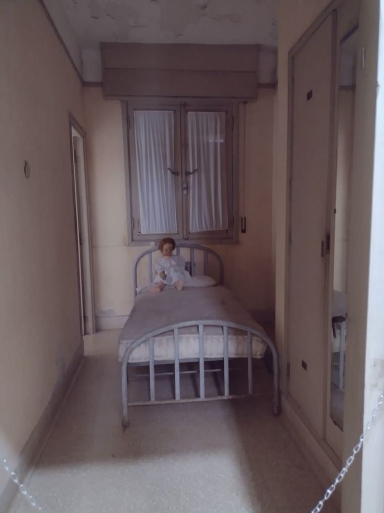
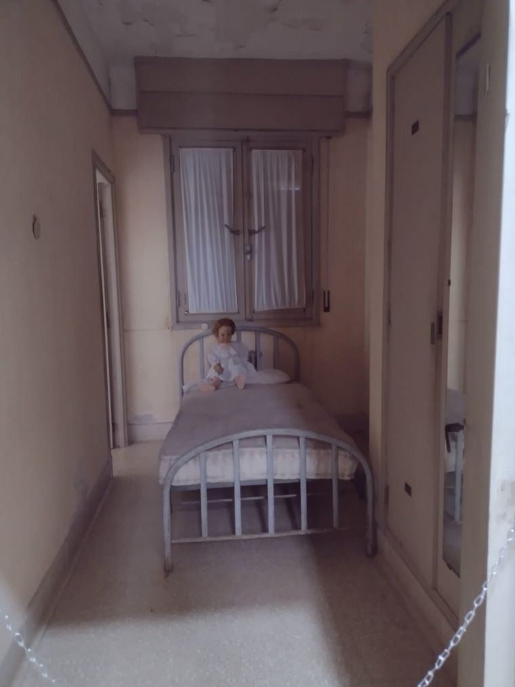
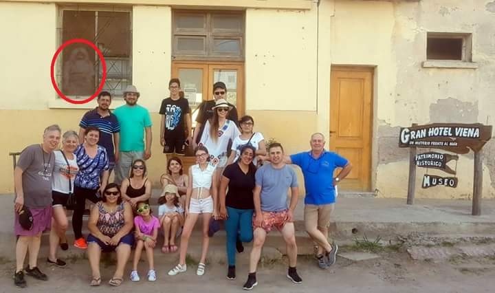
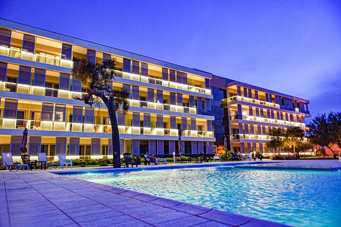
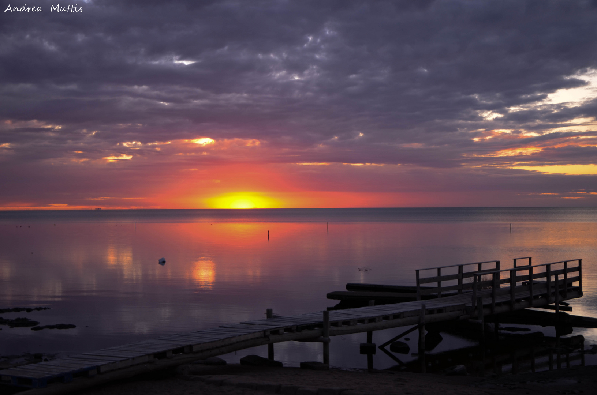
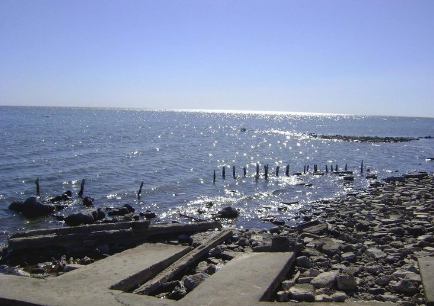
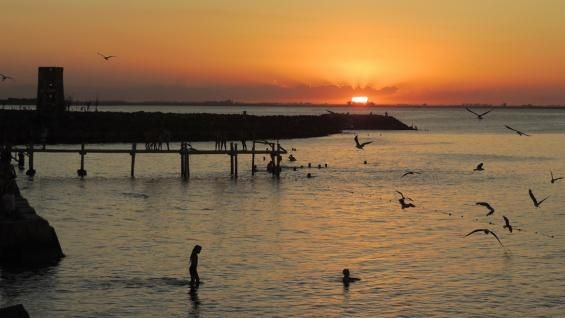

hotel viena
acontinuacion veran uno de los lugares mas fomosos de miramar el hotel viena
 

el hotel viena fue uno de los mas grande de la localidad de miramr y es uno de los lugares mas conocidos por su gran historia y sus mitos de que el hotel viena ahi un fantasma
esa es la foto mas famosa del fantasma y tuvo tanto exito que en el hotel viena se realizan multiples paseos por hotel en el dia y en la noche
hotel-casino
ahora les mostraremos el hotel-casino
es un hotel de 4 estrellas que ofrece television por cable,una caja fuerte personal y climatizador en los cuartos. Algunas unidades disponen de vista al mar.Hay baño privado en cada habitacion. y teiene wifi-gratis,aparcamiento,recepcion 24 horas,restaurante,bar,piscina exterior,casino,jardin,spa-Balneario,sauna ,gimnacio para hacer ejercicio,tenis,campo de golf,
ubicacion
vistas
acontinuacion veremos algunas vistas de miramar de ansenuza
  